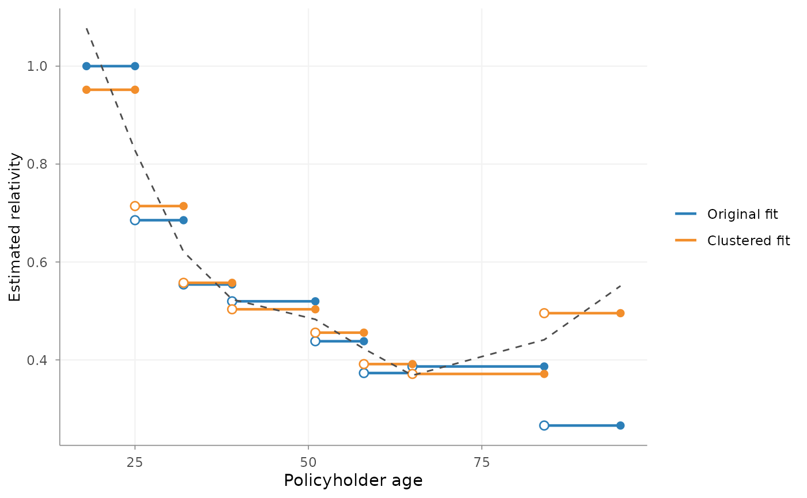
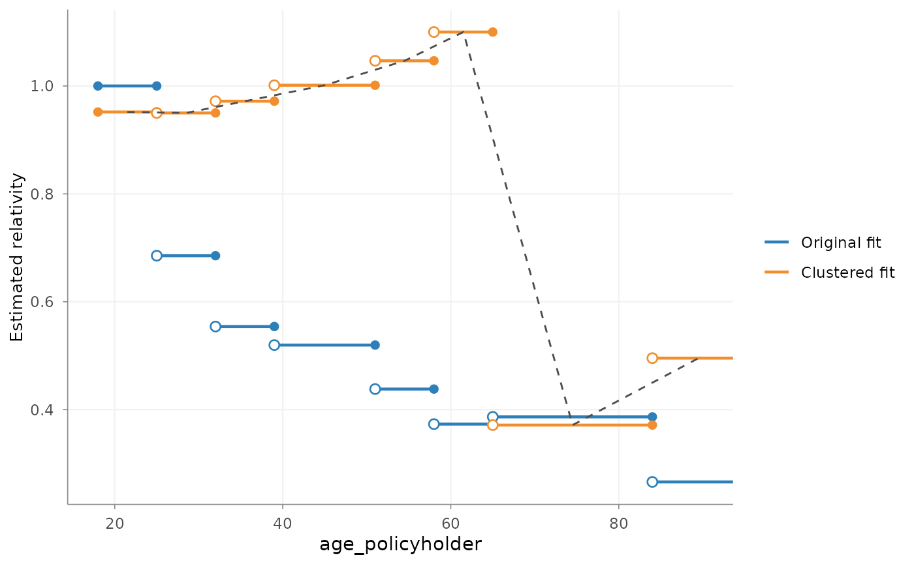
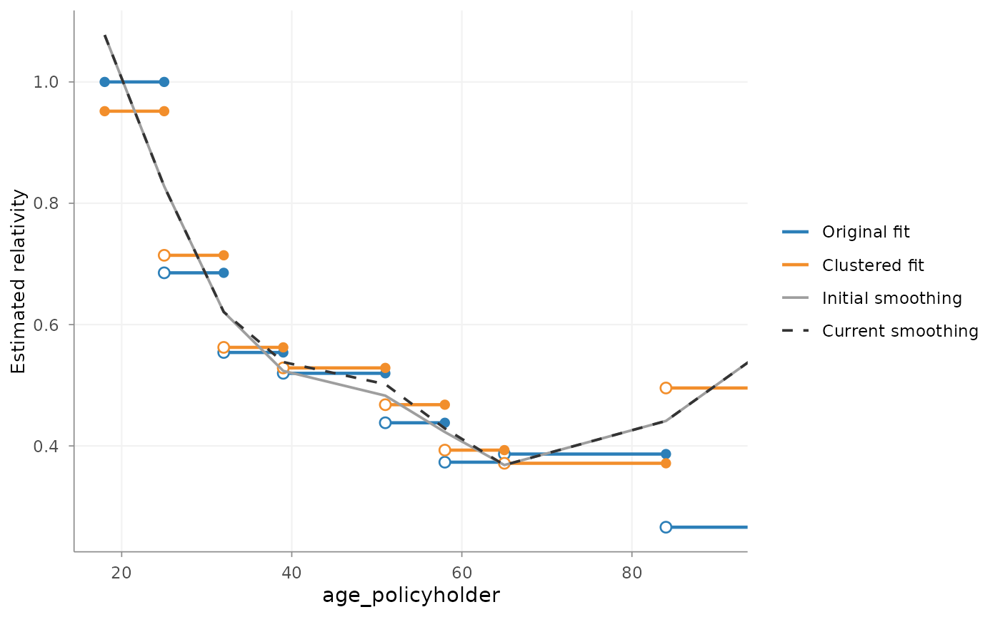
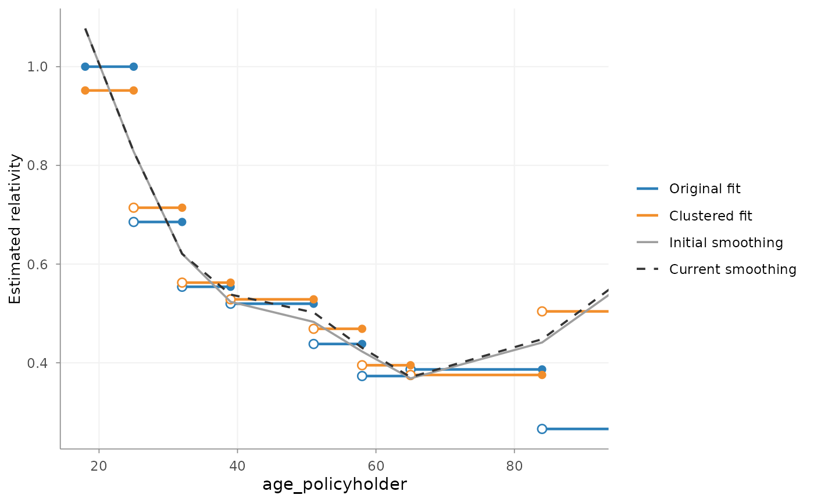
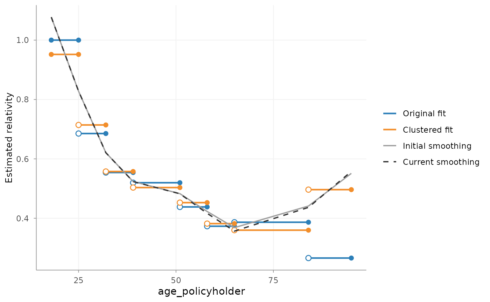
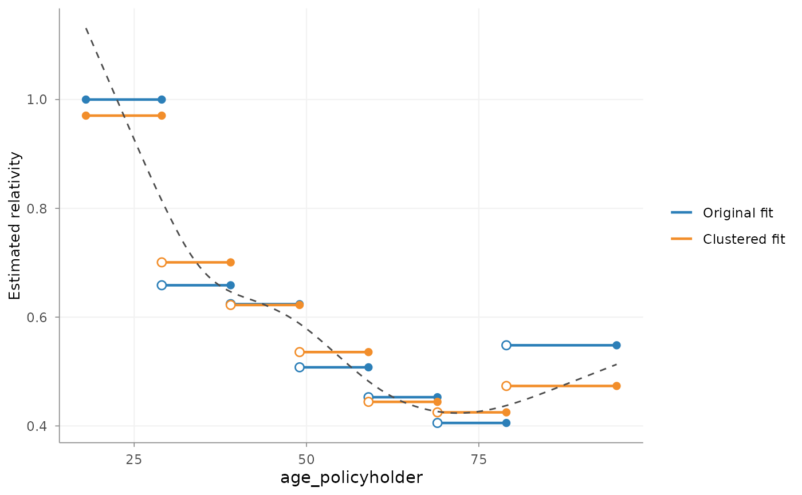
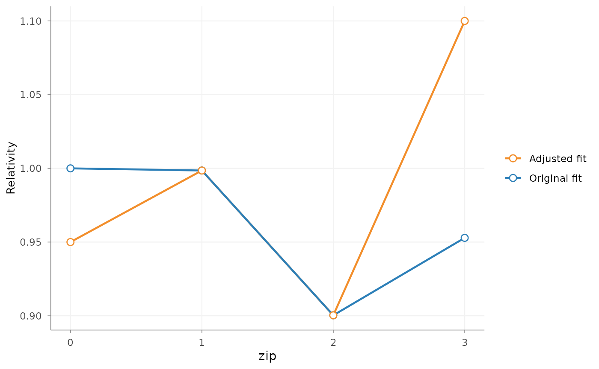
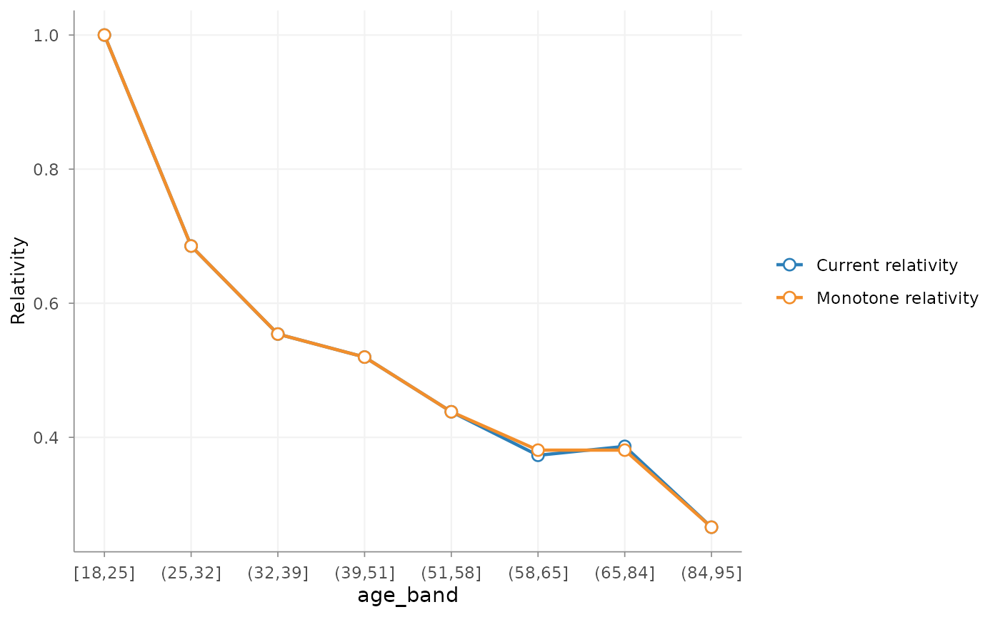
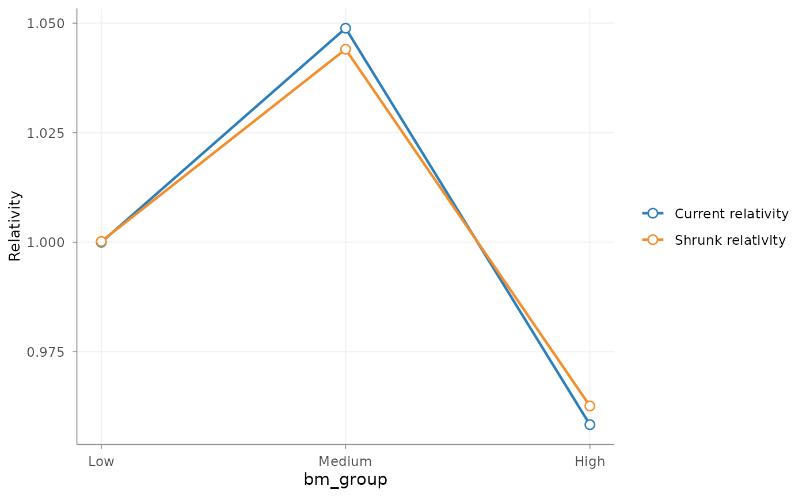

Introduction
Refinement turns fitted effects into explicit tariff proposals. You can review the proposal before refitting, and keep a record of what changed. Start with the age-band example below, or skip to the advanced options for a specific technique. See Getting Started for model construction and the package map for how refinement fits alongside other pricing tasks.
Quick start
Suppose the age-band relativities of a frequency model are uneven. Here we compare them with a smoother age effect. The example keeps the same age bands so that only their relativities change; this is a candidate tariff, not an assumption about how age must affect every portfolio.
Fit the starting model
The response is claim count and log(exposure) is the
offset. ZIP and bonus-malus remain separate model terms and are used in
later examples.
library(insurancerating)
portfolio <- as.data.frame(MTPL)
age_breaks <- c(18, 25, 32, 39, 51, 58, 65, 84, 95)
portfolio$age_band <- cut(
portfolio$age_policyholder,
breaks = age_breaks,
include.lowest = TRUE
)
portfolio$bm_group <- cut(
portfolio$bm,
breaks = c(0, 4, 8, Inf),
labels = c("Low", "Medium", "High"),
include.lowest = TRUE
)
portfolio$bm_detail <- factor(as.character(portfolio$bm))
portfolio$zip <- factor(portfolio$zip)
unrestricted <- glm(
nclaims ~ age_band + zip + bm_group + offset(log(exposure)),
family = poisson(),
data = portfolio
)Smoothing an ordered effect
Fit the curve to the estimated age-band effects using the underlying numeric age. The breaks define the output bands, and exposure gives more weight to levels with more portfolio support.
refinement <- prepare_refinement(unrestricted, data = portfolio) |>
add_smoothing(
model_variable = "age_band",
source_variable = "age_policyholder",
breaks = age_breaks,
smoothing = "spline",
k = 5,
weights = "exposure"
)
initial_age_refinement <- refinementCompare the proposal and refit

age_tariff <- refit(refinement, intercept_only = TRUE)
age_effects <- as.data.frame(rating_table(age_tariff, exposure = FALSE))
subset(age_effects, risk_factor == "age_policyholder_smooth")
#> risk_factor level est_age_tariff
#> 2 age_policyholder_smooth [18,25] 0.9517847
#> 3 age_policyholder_smooth (25,32] 0.7142379
#> 4 age_policyholder_smooth (32,39] 0.5574783
#> 5 age_policyholder_smooth (39,51] 0.5034194
#> 6 age_policyholder_smooth (51,58] 0.4557071
#> 7 age_policyholder_smooth (58,65] 0.3914753
#> 8 age_policyholder_smooth (65,84] 0.3713782
#> 9 age_policyholder_smooth (84,95] 0.4954763The dashed line is the proposed smooth curve. The resulting age-band
relativities are fixed during the intercept-only refit, which estimates
a new base rate. Keep the refinement object to make another
proposal; age_tariff is the fitted result. Use audit_refinement()
to see how changes in relativities and base rate combine on the
portfolio.
Advanced refinement options
The following examples build on the saved proposal. They are
alternatives or additions, not a required sequence. See
?add_smoothing for the full list of curve shapes, weights
and spline settings.
Refining a selected part of the smoothing
add_smoothing() defines the initial curve and its
structural assumptions. edit_smoothing() can set explicit
target values, adjust the relative level, or scale the change in the
curve after an anchor. These are tariff assumptions layered on the
initial smoothing, not additional statistical observations.
Each call to edit_smoothing() is stored as a separate
refinement step. If the same smoothing is edited more than once, the
edits are applied cumulatively in their recorded order. The
step argument in autoplot() can therefore be
used to inspect the curve after a particular edit without introducing a
separate revision argument.
Explicitly redirecting the curve
Use explicit values when the intended targets are known:
explicit_age_refinement <- refinement |>
edit_smoothing(
model_variable = "age_band",
from = 32,
to = 65,
from_value = 0.95,
to_value = 1.10,
control_positions = 51,
control_values = 1.02
)
autoplot(explicit_age_refinement, variable = "age_band", x_max = 90)
The stored edit redirects the selected interval through the supplied target values. This is appropriate when those values have a documented actuarial or implementation basis.
Applying a relative local adjustment
Use adjustment when the current shape is broadly
appropriate but one region should be somewhat higher or lower:
relative_age_refinement <- refinement |>
edit_smoothing(
model_variable = "age_band",
from = 32,
to = 65,
adjustment = 1.05
)
autoplot(
relative_age_refinement,
variable = "age_band",
x_max = 90,
show_initial_smoothing = TRUE
)
Here, adjustment = 1.05 raises the middle of the
selected region by up to 5% relative to the existing smoothing. The
multiplier starts at 1 at from, moves towards 1.05 over the
available smoothing points, and returns to 1 at to. The
unchanged curve is therefore retained outside the interval and no jump
is introduced at either boundary.
With show_initial_smoothing = TRUE, the plot includes
both the curve directly after add_smoothing() and the
cumulative curve at the selected step. This comparison changes only the
plot; it does not alter the stored refinement or the subsequent
refit.
For example, two local adjustments create two successive edit steps:
cumulative_age_refinement <- relative_age_refinement |>
edit_smoothing(
model_variable = "age_band",
from = 50,
adjustment = 1.02,
transition = "linear"
)
# Step 3 is the cumulative result of the initial smoothing and both edits.
autoplot(
cumulative_age_refinement,
step = 3,
x_max = 90,
show_initial_smoothing = TRUE
)
Selecting step = 2 would show the curve after the first
edit only. The initial comparison line remains the result of the
original add_smoothing() step in both plots.
For a tail adjustment, only one boundary is needed. With only
from, the adjustment runs from that value to the end of the
available smoothing range. With only to, it runs from the
beginning of the range to that value. The transition remains attached to
the original curve at the supplied boundary:
# Refine the upper tail
edit_smoothing(
refinement,
model_variable = "age_band",
from = 50,
adjustment = 1.05
)
# Refine the lower tail
edit_smoothing(
refinement,
model_variable = "age_band",
to = 35,
adjustment = 0.95
)With transition = NULL, the default, the transition
inherits the smoothing specification of the step being edited. For
example, an original smoothing = "increasing_concave" uses
the same structural shape logic while adapting the entry and exit to
their opposite directions. The resulting curve is checked against the
inherited monotonicity and curvature where applicable.
Two explicit alternatives are available:
# Continuous straight transitions
edit_smoothing(
refinement,
model_variable = "age_band",
from = 32,
to = 65,
adjustment = 1.05,
transition = "linear"
)
# Immediate changes at both boundaries
edit_smoothing(
refinement,
model_variable = "age_band",
from = 32,
to = 65,
adjustment = 1.05,
transition = "step"
)"linear" remains continuous. "step"
deliberately permits discontinuities and should therefore be selected
only when an immediate tariff change is intended. Relative adjustments
and explicit target values cannot be combined in one
edit_smoothing() call because they express different
instructions. They can be recorded in separate consecutive edit steps
when that sequence has a clear actuarial interpretation.
Adjusting the slope after an anchor
Sometimes the level of the smoothing is acceptable, while the
remaining change above a selected value is to be made stronger or
weaker. In that case, slope_adjustment scales the change
relative to the smoothing value at from:
slope_refinement <- refinement |>
edit_smoothing(
model_variable = "age_band",
from = 50,
slope_adjustment = 1.10
)
autoplot(
slope_refinement,
variable = "age_band",
show_initial_smoothing = TRUE
)
The curve through age 50 is unchanged. Above age 50, each difference
from the relativity at age 50 is multiplied by 1.10. The curve therefore
remains continuous at the anchor. Where the curve falls below its value
at age 50, the decline relative to that anchor is 10% larger. A value
between 0 and 1 flattens the remaining effect. This is different from
adjustment, which changes the relative level over a
selected interval.
Each edit_smoothing() call records one type of
intervention: a relative level adjustment, a slope adjustment, or
explicit target/control-point values. When both level and slope require
adjustment, use two consecutive calls:
refinement |>
edit_smoothing(
model_variable = "age_band",
from = 30,
to = 50,
adjustment = 1.05
) |>
edit_smoothing(
model_variable = "age_band",
from = 50,
slope_adjustment = 1.10
)The refinement history then retains both actuarial choices as separate steps.
The transformation preserves the direction of an increasing or decreasing effect. For a shape-constrained curve, a value above 1 may nevertheless create a visible change in slope at the anchor and need not preserve global concavity or convexity across that exact point. This should therefore be treated as an explicit actuarial intervention and inspected before refitting.
The remainder of this vignette uses
relative_age_refinement as the current proposal:
refinement <- relative_age_refinementThe relativity plot shows the overall tariff shape:
autoplot(refinement, variable = "age_band")
Interpreting the premium effect
A relativity curve shows the shape of a tariff effect. To read its
magnitude, use premium_change() with a meaningful
increment, for example five years of age:
premium_change(
refinement,
variable = "age_band",
at = seq(20, 60, by = 5),
increment = 5
)
#> Premium change for age_policyholder
#>
#> Increment: 5
#> Basis: Effective smoothing curve
#>
#> From To Premium change
#> 20 25 -17.7%
#> 25 30 -17.9%
#> 30 35 -13.9%
#> 35 40 -8.6%
#> 40 45 -2.8%
#> 45 50 -2.9%
#> 50 55 -8.9%
#> 55 60 -10.5%
#> 60 65 -10.5%The first row compares the modelled tariff at ages 20 and 25, holding
other factors fixed. It is not a prediction of the change at an
individual policy renewal. The calculation uses the current edited curve
without extrapolating. Omit increment to compare a value
with twice that value instead.
For an insured-amount smoothing, increment = 100000
would ask how much modelled premium changes for another 100,000 from
each displayed starting value. It might, for example, compare 100,000
with 200,000, then 200,000 with 300,000. Successive percentage changes
may decline, remain stable or increase depending on the fitted
relationship. The increment is a finite practical comparison, not a
derivative or slope, and no particular pattern is imposed by the
package.
By default, basis = "curve" evaluates the continuous
effective smoothing at the exact starting and comparison values. This is
the appropriate basis when the question concerns the shape or steepness
of the smoothing itself. To review the premium effect of the
implementable tariff classes instead, use:
premium_change(
refinement,
variable = "age_band",
at = c(20, 25, 30, 35),
increment = 5,
basis = "segments"
)
#> Premium change for age_policyholder
#>
#> Increment: 5
#> Basis: Tariff segments
#>
#> From To Premium change
#> 20 25 0.0%
#> 25 30 -25.0%
#> 30 35 -21.3%
#> 35 40 -6.0%With basis = "segments", the helper determines which
effective tariff interval contains each value and compares the
corresponding current segment relativities. The result can therefore be
0% when both values are in the same segment, even when the underlying
curve changes within that range. A change can also occur discretely when
a comparison crosses a segment boundary. The two bases answer different
questions: the curve describes the underlying smooth relationship, while
the segments describe the tariff that would be applied.
The initial and edited relationships can be compared directly:
premium_change(
relative_age_refinement,
variable = "age_band",
at = c(20, 25, 30),
increment = 5,
steps = c(1, 2)
) |>
as_gt()| Premium change for +5 age_policyholder | ||||
| Based on the effective continuous smoothing curve | ||||
| From | To | Step 1 | Step 2 | Difference |
|---|---|---|---|---|
| 20 | 25 | −17.7% | −17.7% | 0.0 pp |
| 25 | 30 | −17.9% | −17.9% | 0.0 pp |
| 30 | 35 | −14.8% | −13.9% | 0.9 pp |
With two selected states, the table shows both premium changes and their difference in percentage points. This comparison is often easier to interpret than small visual differences between two relativity curves. It remains an interpretation of the proposed smoothing and does not alter the refinement.
Restricting selected levels
add_restriction() can fix tariff levels at supplied
relativities or apply a multiplier to their current relativities. A
restriction may represent an implementation rule, a supported external
assumption or a deliberate response to an unstable local estimate. It
differs from smoothing: smoothing estimates a structured pattern,
whereas a restriction records an explicit level decision.
refinement <- refinement |>
add_restriction(
restrictions = c("0" = 0.95, "3" = 1.10),
model_variable = "zip"
)Only ZIP levels 0 and 3 are supplied here. The other observed ZIP levels are fixed at their current effective relativities. Consequently, a partial restriction changes the selected values but still produces a complete fixed structure for that risk factor. The named-vector form is preferred because each level remains directly beside its relativity. A two-column data frame remains a fully supported alternative; its column names identify the source factor and generated tariff column.
In that data frame, the level column must be character or factor and
the value column must be numeric. Numeric category codes must be
converted explicitly with as.character() or
factor(). Named-vector input such as
c("0" = 1.00, "3" = 1.10) already uses character labels,
even though the category names look numeric.
Alternatively, restriction_type = "multiplier" retains
an adjustment relative to the effect that exists at that point in the
refinement. Here the current ZIP 3 relativity is increased by 10%; it is
not stored as a prematurely calculated fixed value.
prepare_refinement(unrestricted, data = portfolio) |>
add_restriction(
restrictions = c("3" = 1.10),
model_variable = "zip",
restriction_type = "multiplier"
)
#> <rating_refinement>
#> Base model: Poisson GLM (log link)
#> Steps: 1
#> 1. Multiplier restriction: zip -> zip_multiplier (4 levels)Multipliers require an existing level and cannot introduce a new factor or level. Step order is material: a multiplier after a fixed restriction scales that fixed value, while a later fixed restriction supersedes earlier multipliers for the same factor. Both choices remain explicit in the refinement summary and audit trail.
Repeated calls for the same restricted variable update matching
levels and retain earlier restrictions for levels not supplied again.
New levels may be added when they represent explicit tariff assumptions;
new risk factors require the corresponding portfolio column and an
explicit opt-in. These behaviours are documented in the
add_restriction() reference.
allow_new_risk_factors = TRUE is permission to introduce
a new fixed factor, not a requirement that the factor be new. For a
factor already in the GLM or created by an earlier refinement step, it
has no additional effect and does not itself produce a warning or
message. This also holds for multipliers, which still require an
existing relativity and cannot introduce a new factor. The flag does not
request replacement of another model variable.
A new fixed tariff factor can also replace an existing standalone
model term. For example,
add_restriction(..., replaces = "postal_area") records that
the new classification substitutes for postal_area during
refit(), rather than adding a second multiplicative effect.
The replacement is shown in the refinement summary and audit.
Interactions and transformed terms must be revised explicitly in the
model specification because removing them is not an unambiguous level
restriction.
autoplot(refinement, variable = "zip")
Again, the plot shows the proposed restriction before
refit().
Enforcing an order without smoothing
For grouped continuous variables such as insured amount or
reconstruction value, a tariff may require increasing relativities
without a smooth curve. add_monotonicity() accepts the
existing grouped model factor, including ordinary factors from
cut(). Numeric labels such as "100",
"200", "1000" and non-overlapping numeric
intervals are put in numeric order. There is no need to convert those
factors to ordered(). Numeric order also takes precedence
for ordered factors: a conflicting declared order produces a warning,
and the projection uses ascending numeric order. Interval overlap is
rejected for both ordinary and ordered factors.
The following alternative uses the existing age bands, whose estimated effects mostly decrease, to demonstrate the decreasing variant. Choosing a direction remains an explicit actuarial assumption, not a universal rule for age. This starts from the unrestricted model and does not change the refinement below.
ordinal <- prepare_refinement(unrestricted) |>
add_monotonicity("age_band", direction = "decreasing", weights = "exposure")
autoplot(ordinal, variable = "age_band")
Unlike add_smoothing(), this keeps the existing
categories and only adjusts their relativities; there is no
source_variable, new breaks or fitted curve.
For non-numeric categories such as "Low",
"Medium", "High", declare an ordered factor
with explicit levels before fitting the GLM. That declared order is
retained; alphabetical order is never assumed to be a tariff order. The
original reference level does not have to come first in the monotonic
sequence.
The default isotonic method pools adjacent violations on the
log-relativity scale; equal fitted levels are allowed. It does not fit a
smooth curve. Use method = "increase_only" if no level may
fall, or "decrease_only" if no level may rise. These
restrictions apply to the factor effect, not the final premium:
refit(ordinal) fixes the projected ratios but re-estimates
the intercept and remaining free effects. This differs from estimating a
GLM with order constraints in its likelihood.
After another refinement, add_monotonicity() can be
called again for the same model variable. It projects the current
effects and appends a new step; it does not overwrite the earlier
decision. Default output columns receive unique names such as
age_band_monotone and age_band_monotone_1. At
refit, only the latest effective relativity is applied, without double
counting. An explicit output_variable must still name a new
column. Reapplying the same direction to an already monotone effect
leaves its values unchanged.
Shrinking a categorical effect
add_shrinkage() reduces the differences between the
current relativities of one categorical risk factor. It is useful when
the direction and ordering of an estimated effect are considered
informative, but the spread between levels is larger than is supported
by the available experience or the intended tariff. Unlike a
restriction, shrinkage does not prescribe individual level values.
refinement <- refinement |>
add_shrinkage(
model_variable = "bm_group",
credibility = 0.9,
weights = "exposure"
)credibility is the weight assigned to the current
logarithmic effect. A value of 0.9 retains 90 percent of each level’s
deviation from the common centre; a value of 1 leaves the effect
unchanged, while a value of 0 removes differences between levels. This
is a user-selected refinement parameter, not an automatically estimated
Buhlmann or Buhlmann-Straub credibility factor.
Exposure is the weighting basis used for the common centre in this
frequency example. For a severity model, claim count may be a useful
alternative. Use weights = "equal" when every factor level
should receive equal weight rather than representing the observed
portfolio mix.
After shrinkage, the relativities are normalised so their exposure-weighted arithmetic mean remains equal to its value before shrinkage. The operation therefore reduces tariff differentiation without intentionally changing the weighted level of this risk factor. The later refit can still recalibrate the intercept or other free model effects.
autoplot(refinement, variable = "bm_group")
This remains a pre-refit comparison: it shows the current estimated effect and the proposed shrunken structure stored in the refinement specification.
Adding differentiation within model levels
add_relativities() addresses a different problem. An
unrestricted GLM may use a broad factor because its detailed levels are
individually too sparse for stable direct estimation. The refinement can
retain the broad parent effect while introducing documented
differentiation between selected sublevels.
The example splits the broad bonus-malus groups Low and
Medium into their observed detailed values. The preferred
named-vector form keeps each level next to its relativity. The same
split can also be supplied as character new_levels plus a
separate numeric relativities vector.
bm_relativities <- relativities(
split_level(
"Low",
new_levels = c("1" = 0.95, "2" = 0.98, "3" = 1.02, "4" = 1.05)
),
split_level(
"Medium",
new_levels = c("5" = 0.96, "6" = 0.99, "7" = 1.02, "8" = 1.05)
)
)
refinement <- refinement |>
add_relativities(
model_variable = "bm_group",
split_variable = "bm_detail",
relativities = bm_relativities,
exposure = "exposure",
normalize = TRUE,
output_variable = "bm_tariff_segment"
)model_variable supplies the parent GLM effect.
split_variable identifies the detailed portfolio levels
within each parent. output_variable names the resulting
hybrid tariff factor; unsplit parent levels retain their existing model
effect.
After refitting, rating_table() reports this output
factor and rating_grid() uses its segment levels instead of
the parent grouping. The numeric split relativity is linked to the new
segment, since one parent can now contain several different
relativities. Later shrinkage and rebasing of
bm_tariff_segment retain that grouping, also with
refit(intercept_only = TRUE).
audit_refinement() can therefore review the final segments
without discarding the original variables needed to predict the
unrestricted model.
With normalize = TRUE, the sublevel relativities are
normalised within each parent so their exposure-weighted average equals
one. The split therefore redistributes the parent effect without
changing its exposure-weighted level. This does not guarantee the same
total predicted premium once other rating factors are taken into
account. Because shrinkage was added first, these sublevel effects use
the shrunken bm_group relativities as their parent values.
With normalize = FALSE, the supplied relativities are
applied directly.
This operation is not equivalent to restriction or smoothing:
- smoothing regularises an ordered effect already represented by the model;
- restriction fixes or multiplies selected tariff values;
- shrinkage reduces differences between categorical levels while retaining their ordering;
- additional relativities introduce finer differentiation inside a broader model level.
Step order matters. A restriction or shrinkage step added before
add_relativities() changes the parent coefficient used as
the basis for the split. A later restriction can instead adjust selected
levels of the derived output_variable. With
restriction_type = "multiplier", the parent adjustment is
included once in the split; the earlier restricted effect is replaced in
the model offset.
Combining and reviewing refinements
The four operations now form one ordered specification:
summary(refinement)
#> Refinement specification
#>
#> Package: insurancerating 0.8.2.9000
#> Created: 2026-11-22 13:48:40 UTC
#> Observations: 30,000
#> Family: poisson (log link)
#> Base formula:
#> nclaims ~ age_band + zip + bm_group + offset(log(exposure))
#> Offset: log(exposure)
#>
#> Refinement steps: 5
#> 1. Smoothing: age_band from age_policyholder (method: spline, k: 5, scale: relativity)
#> shape = spline; 8 intervals over 18 to 95
#> 2. Smoothing edit: age_band (relative adjustment: 1.05 from 32 to 65, transition: inherited)
#> relative adjustment = 1.05; transition = inherited; cumulative from smoothing step 1
#> 3. Restriction: zip -> zip_restricted (4 levels)
#> type = fixed; 0 = 0.9500000; 1 = 0.9954865; 2 = 0.8971513; 3 = 1.1000000
#> 4. Shrinkage: bm_group (credibility: 0.9, weights: exposure, weighted mean preserved)
#> credibility = 0.9; weights = exposure; weighted mean preserved
#> 5. Relativities: bm_group split by bm_detail -> bm_tariff_segment (normalised: yes)
#> 2 parent levels split: Low, MediumThe summary records the base formula, package version, data size and
each refinement in evaluation order. It describes what will be applied;
it does not report a fitted refined model because refit()
has not yet been called.
The variable-specific autoplot() calls above evaluate
the stored steps in their recorded order. They therefore inspect the
intended tariff after any preceding adjustments without silently
changing the GLM. The step argument can be used when an
earlier stage of a longer specification needs to be reviewed
separately.
add_rebasing() can be inserted when required to change
which resulting level is displayed as one without changing ratios
between levels. Rebasing changes the representation of an effect,
whereas shrinkage changes its degree of differentiation.
Refitting the model
refined_model <- refit(
refinement,
intercept_only = TRUE
)
#> Warning in update_formula_remove(formula, old_term): Column 'bm_group' must be in model call.refit() applies the stored steps in order, constructs
the required tariff variables and offsets, updates the formula and calls
glm() with the original model family. It does more than
copy proposed relativities into an existing coefficient vector.
The treatment of the remaining model effects depends on
intercept_only:
- with
intercept_only = TRUE, unaffected existing effects are fixed as offsets and only the intercept is estimated. Their relative differences are preserved while the overall level is recalibrated; - with
intercept_only = FALSE, remaining free terms are estimated again. Their coefficients may change as the GLM finds a new joint optimum conditional on the fixed refinement steps.
Choose between these modes based on which existing relationships are to remain fixed and which effects can be re-estimated.
The prescribed smoothing, restrictions and sublevel relativities remain explicit assumptions. Refitting does not turn them into unrestricted statistical estimates.
Inspecting the fitted result
After refit(), the result is a fitted GLM and can be
reviewed with the normal interpretation tools:
head(rating_table(refined_model, exposure = FALSE))
#> risk_factor level est_refined_model
#> 1 (Intercept) (Intercept) 0.2568384
#> 2 zip_restricted 0 0.9500000
#> 3 zip_restricted 1 0.9954865
#> 4 zip_restricted 2 0.8971513
#> 5 zip_restricted 3 1.1000000
#> 6 bm_group Medium 1.0440707This is the post-refit result. It is distinct from
the preview shown by autoplot(refinement):
Printing refined_model also reports the original and
refitted formulas, the model family, refit mode and stored refinement
steps before showing the regular GLM output.
Calibrating the final level
After the tariff structure has been refined and fitted, an externally selected overall calibration factor can be applied to a log-link model:
calibrated_model <- adjust_intercept(
refined_model,
factor = 1.05
)
evaluation <- extract_model_data(refined_model)
before <- predict(refined_model, newdata = evaluation, type = "response")
after <- predict(calibrated_model, newdata = evaluation, type = "response")
sum(after) / sum(before)
#> [1] 1.05adjust_intercept() adds log(1.05) to the
intercept. Response-scale predictions therefore increase by exactly 5%,
while all non-intercept coefficients and the ratios between tariff
levels remain unchanged. The original refined_model is not
modified.
This differs from refit(intercept_only = TRUE). An
intercept-only refit estimates the overall level from the model data
conditional on the stored refinements. Calibration instead applies one
explicit total factor after that fit. It is consequently a final
model-level operation: further refinement and repeated calibration are
rejected. If the tariff structure changes, return to the retained
refinement specification, refit it and calibrate the new
result.
Auditing the portfolio effect
Individual coefficient changes are difficult to interpret
independently of the intercept, other model terms and portfolio mix.
audit_refinement() therefore compares predictions from the
unrestricted and refined models on the same observed portfolio
combinations.
refinement_audit <- audit_refinement(
refined_model,
exposure = "exposure",
metric = "frequency"
)
summary(refinement_audit)
#> Refinement audit
#>
#> Package: insurancerating 0.8.2.9000
#> Prepared: 2026-11-22 13:48:40 UTC
#> Refitted: 2026-11-22 13:48:46 UTC
#> Audited: 2026-11-22 13:48:46 UTC
#> Measure: frequency (per_exposure)
#> Exposure: exposure
#>
#> Original formula:
#> nclaims ~ age_band + zip + bm_group + offset(log(exposure))
#> Refitted formula:
#> nclaims ~ offset(log(bm_group_rel) + log(bm_group_shrunk) + log(zip_restricted) +
#> log(age_band_smooth) + log(exposure))
#>
#> Refinement steps: 5
#> 1. Smoothing: age_band from age_policyholder (method: spline, k: 5, scale: relativity)
#> shape = spline; 8 intervals over 18 to 95
#> 2. Smoothing edit: age_band (relative adjustment: 1.05 from 32 to 65, transition: inherited)
#> relative adjustment = 1.05; transition = inherited; cumulative from smoothing step 1
#> 3. Restriction: zip -> zip_restricted (4 levels)
#> type = fixed; 0 = 0.9500000; 1 = 0.9954865; 2 = 0.8971513; 3 = 1.1000000
#> 4. Shrinkage: bm_group (credibility: 0.9, weights: exposure, weighted mean preserved)
#> credibility = 0.9; weights = exposure; weighted mean preserved
#> 5. Relativities: bm_group split by bm_detail -> bm_tariff_segment (normalised: yes)
#> 2 parent levels split: Low, Medium
#>
#> Portfolio effect
#> Before: 0.137596
#> After: 0.137596
#> Change: -1.95122e-14 (-1.418e-11%)
#>
#> Largest level changes (10 of 24)
#> risk_factor level before after change
#> age_policyholder_smooth (84,95] 0.06942859 0.12783575 0.058407152
#> zip_restricted 3 0.13680279 0.15155033 0.014747533
#> zip_restricted 0 0.14020239 0.12759132 -0.012611074
#> bm_tariff_segment 8 0.14270460 0.15538814 0.012683531
#> bm_tariff_segment 4 0.13883017 0.15067141 0.011841241
#> age_policyholder_smooth [18,25] 0.26142311 0.24440223 -0.017020877
#> bm_tariff_segment 7 0.14278504 0.15180712 0.009022077
#> bm_tariff_segment 3 0.13764208 0.14514697 0.007504895
#> age_policyholder_smooth (65,84] 0.10100599 0.09551705 -0.005488934
#> age_policyholder_smooth (51,58] 0.11462184 0.11999825 0.005376415
#> change_ratio
#> 0.84125502
#> 0.10780140
#> -0.08994907
#> 0.08887962
#> 0.08529300
#> -0.06510854
#> 0.06318643
#> 0.05452471
#> -0.05434266
#> 0.04690568This audit uses refined_model, before the additional 5%
intercept adjustment. It reports the portfolio-level frequency before
and after refinement and the corresponding changes by final risk-factor
level. These are predictions from the complete model for the observed
portfolio mix, not isolated coefficient differences.
The refinement and audit objects record package version, timestamps, formulas and ordered steps. This supports reproducibility, peer review and documentation of actuarial judgement. Organisational approval, source-data versioning and formal governance remain outside the package and should be handled by the user’s normal processes.
When to revisit the model
Refinement is not a substitute for correcting a poor model. If an implausible effect is caused by incorrect data, exposure errors, missing interactions, an inappropriate response definition or poor factor construction, the model or data preparation should be revisited first. Refinement is most defensible when the statistical model captures the main risk structure and the remaining adjustment has a clear tariff rationale.
Iterating without losing the specification
Retain both the editable specification and the fitted result:
refined_model <- refit(refinement)
refinement <- refinement |>
edit_smoothing(
model_variable = "age_band",
from = 32,
to = 65,
adjustment = 1.03,
transition = "linear"
)
updated_model <- refit(refinement)This appends an edit to the current smoothing. Earlier edits to that
curve remain in effect. To compare an alternative instead of building on
the previous edit, start a separate branch from the saved
initial_age_refinement.
Calling add_smoothing(), add_restriction()
or another refinement function directly on refined_model is
deliberately not supported. Further adjustments belong on the retained
rating_refinement object so their ordering and origin
remain visible.
Summary
The specialist workflow is:
- start from an unrestricted fitted model;
- create one persistent specification with
prepare_refinement(); - add smoothing, restrictions, shrinkage or sublevel relativities with an explicit rationale;
- inspect the proposal with
summary()andautoplot(); - use
refit()to fit the model under that specification; - inspect the final tariff with
rating_table()and its portfolio effect withaudit_refinement().
This separates estimated effects, proposed actuarial adjustments and final fitted output without treating refinement as an automatic approval of the result.
Where to go next
- Getting Started constructs the initial pricing model used as the starting point for refinement.
- Pricing workflow and package building blocks places refinement within the wider package architecture.
- Model validation develops the diagnostics used to assess unrestricted and refined models.